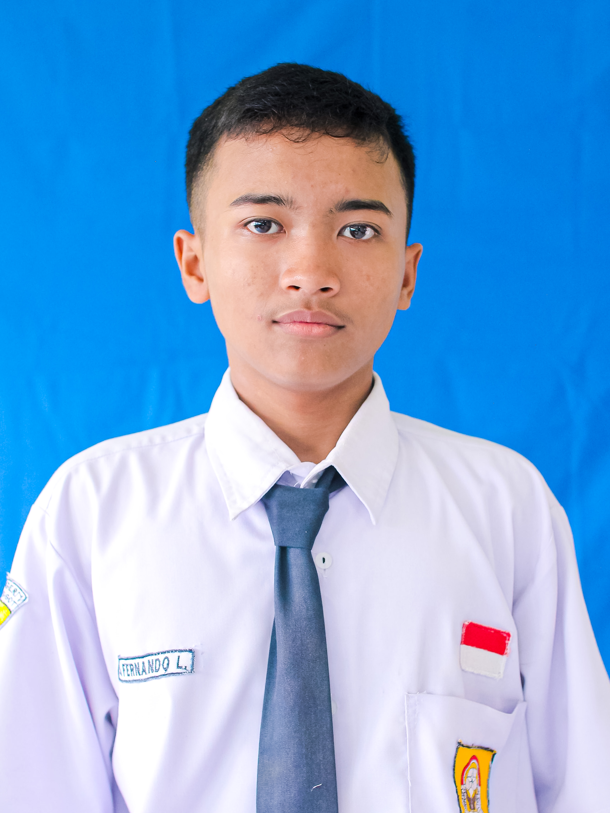

Siswa TKJ | Network Engineer | IT Support
Halo! Saya Muhammad Fernando Lorenzio siswa SMK jurusan TKJ dari SMK NEGERI 1 TANJUNGANOM. Saya tertarik di bidang jaringan komputer, server, dan troubleshooting. Tujuan saya menjadi [Network Engineer / IT Support] yang profesional.
Setting jaringan RT/RW Net di Ngronggot. Menggunakan Mikrotik + Access Point. Hasil: 20 rumah terhubung internet stabil.
Praktik membuat Server File Sharing menggunakan Linux Ubuntu Server di sekolah.
Email: fernandolorenzio55@gmail.com
No. HP: 0831-1315-9114
Alamat: Nganjuk, Jawa Timur
Hubungi via WhatsApp